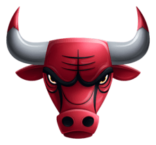

This is my main hobby. It has been with me practically since I was born. It has been an anchor in my life. It has allowed me to tap into my creativity, and I've made multiple spreadsheets and done some theorycrafting by cross-referencing two or more different games. I think my gaming hobby plays a huge factor as to why I'm into analytics and statistics. It has gotten me through the best and toughest days. Some of my favorite genres include: Action, RPG, and Horror games. I'm light on the horror though, especially when I already know I have a sensitive nervous system. I can be competitive when it comes naturally, because I like seeing my effort result in winning, but for the most part, I love playing casually. I will always choose to play casual or intermediate over competitive.
Anything cat-related is probably my biggest weakness. I adore cats heavily ever since I was young. Anytime I'm viewing aesthetics, I have to look for at least one cat-related aesthetic, whether it's for a profile avatar or a static/dynamic wallpaper. I've always had a soft side for the cutesy stuff, so that may be why I'm constantly drawn to cat aesthetics. If I had to choose one cat breed I'd want to buy when I get my own home is the Maine Coon breed. It is the world's largest domesticated cat breed, and they're just a very interesting breed. There is a short, ~2 minute video of some simple facts about Maine Coons at the end of this page.
Before sports, before tech, and before a lot of things, I've been drawn to nature. I had aspirations for learning atmospheric sciences and meteorology to be specific. I still do, but that is no longer my primary aspiration. I can always still learn a bit on the side. I love the rain or snow the most, and sometimes I wish it rained more, but I also enjoy the sunny days, as long as I'm not directly under the sunlight because it does get annoying at times. The scenery of blossoming trees, a full patch of grass, the sun shining or total cloud cover in the sky is all very stimulating for me. If you've seen in my resume, I made a very simplistic Meteorology Weather Simulator that I started back in December.
When I was young, I used to prefer football over basketball. As time passed however, the rough and destructive playstyle of football didn't resonate with me. I've grown up to be a gentle person whenever I can, and I've come to appreciate how the rules of basketball emphasize protecting you and your opponent. During COVID (2020-21), I decided to watch some Chicago Bulls Basketball. Now, Basketball is my favorite sport by far. Every day since, I watch a designated podcast centered around the team. Every season, I try to make sure I'm there to watch all 82 regular season games, including all 5 preseason games. That is a testament to how much of a fan I am.
